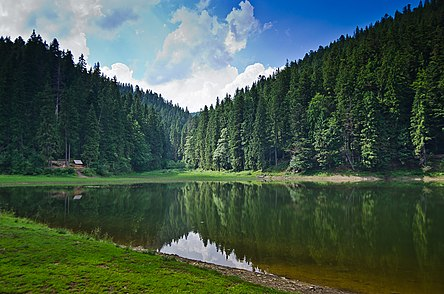
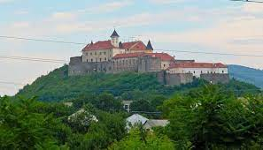
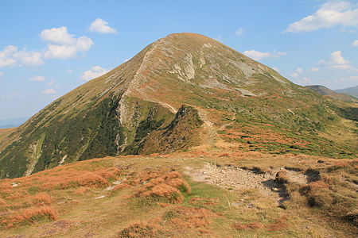

Озеро вважається найцікавішим об'єктом Національного природного парку «Синевир» і є однією з візитних карток Українських Карпат. Воно розташоване на висоті 989 метрів над рівнем моря, має середню площу 4—5 гектарів, його середня глибина становить 8—10 м, максимальна — 22-24 м. Через значну висоту над рівнем моря і порівняну глибоководність навіть у найтепліші дні прогріваються лише верхні 1—2 метри озера до максимальної температури 11—13°С.

Замок побудований на горі вулканічного походження заввишки 68 м і посідає площу 13 930 кв. м. Точний час заснування замку невідомий, але в документах, які позначаються XI століттям, він уже згадується. Особливого значення надав замку угорський король Стефан І Святий, укріпивши його стіни. Справу Стефана І продовжив Св. Владислав. У 1086 році Мукачівський замок взяли в облогу печеніги, та вони не змогли його захопити.
У 1312 році, після того, як італійські брати Другети допомогли королю Карлу Роберту з нової династії Анжу придушити повстання наджупана Петра Петені, Карл Роберт подарував братам Ужгородський замок та землі. Вони володіли ним 350 років. Чотири шпаки — герб Другетів У період, коли замок перебував у володінні роду Другетів (1322–1691), в фортифікаційному мистецтві відбувалися великі зміни, викликані переважно появою нових видів зброї, і в першу чергу зброї вогнепальної. Це все вимагало докорінної реконструкції замку, яка була здійснена в кінці XVI століття з використанням найновітніших досягнень фортифікаційного мистецтва Європи.

Походження назви гори суперечливе. Українські мовознавці переважно стверджують, що топонім «Говерла» походить із рум. howârla, що означає «важкопрохідне підняття». Деякі джерела виводять назву гори від угор. hóvár — «сніговий замок», але набагато ймовірнішою є думка, що угорське найменування — це модифікація української назви. Угорські джерела на межі XIX— XX ст. згадують гору під іменем Hoverla, водночас в «Етимологічному словнику географічних назв» не наведено назви Hóvár. Угорське походження малоймовірне й через те, що, за сучасними даними, на горі ніколи не було замку, а модифікація Hoverla — Hóvár не має задовільного лінгвістичного пояснення.
